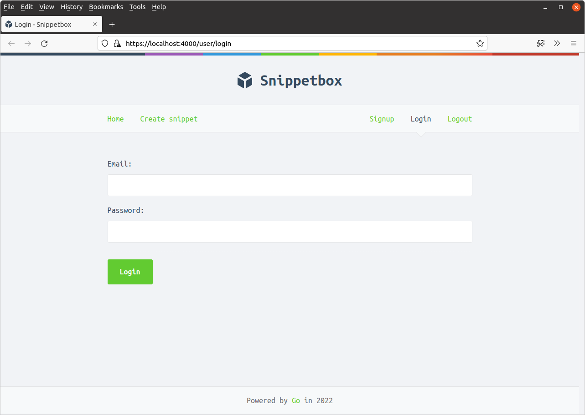
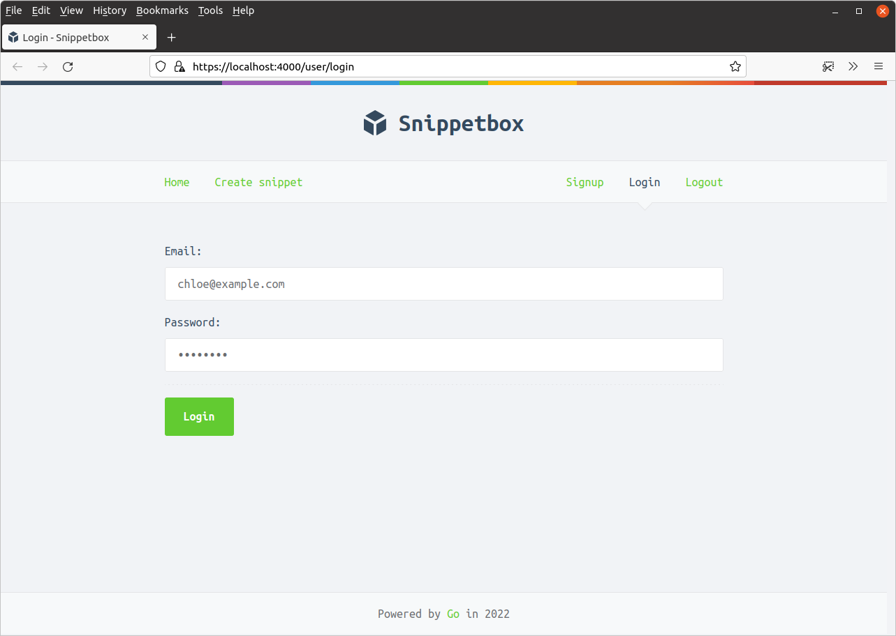
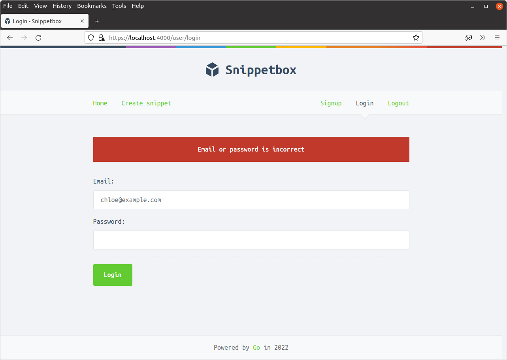
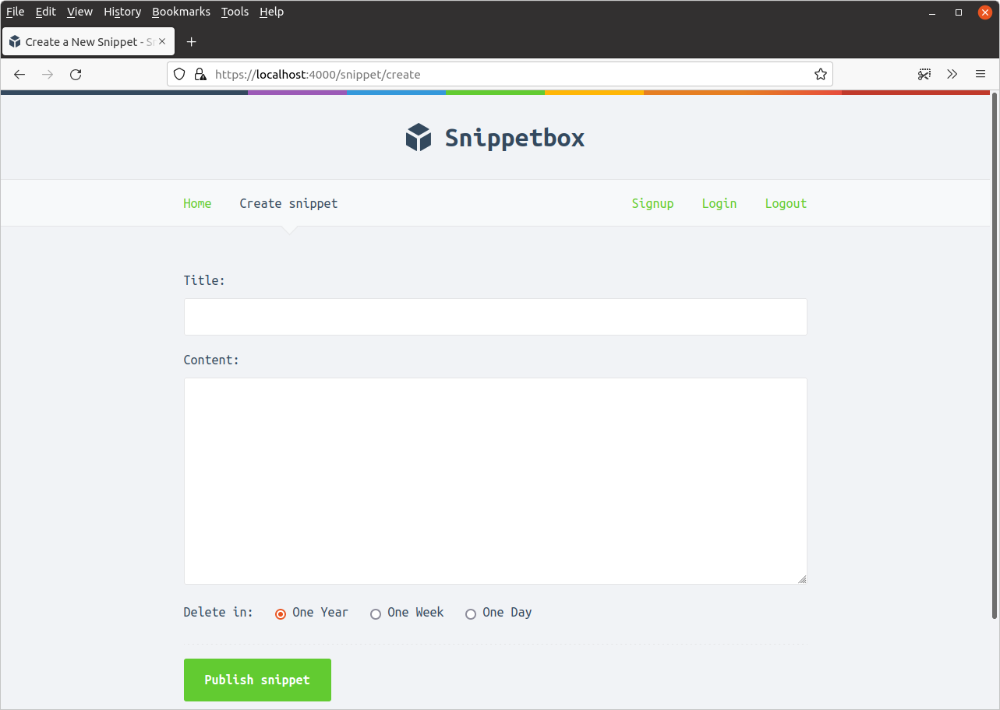

ورود کاربر
در این فصل ما قصد داریم بر ایجاد صفحه ورود کاربر برای برنامه خود تمرکز کنیم.
قبل از اینکه به بخش اصلی این کار بپردازیم، بیایید به سرعت بسته internal/validator که قبلاً ساختیم بازگردیم و آن را بهروزرسانی کنیم تا از خطاهای اعتبارسنجی که با یک فیلد فرم خاص مرتبط نیستند پشتیبانی کند.
ما بعداً در این فصل از این استفاده خواهیم کرد تا در صورت شکست ورود، یک پیام عمومی “آدرس ایمیل یا رمز عبور شما اشتباه است” به کاربر نمایش دهیم، زیرا این امنتر از نشان دادن صریح دلیل شکست ورود در نظر گرفته میشود.
لطفاً ادامه دهید و فایل internal/validator/validator.go خود را به این صورت بهروزرسانی کنید:
package validator ... // Add a new NonFieldErrors []string field to the struct, which we will use to // hold any validation errors which are not related to a specific form field. type Validator struct { NonFieldErrors []string FieldErrors map[string]string } // Update the Valid() method to also check that the NonFieldErrors slice is // empty. func (v *Validator) Valid() bool { return len(v.FieldErrors) == 0 && len(v.NonFieldErrors) == 0 } // Create an AddNonFieldError() helper for adding error messages to the new // NonFieldErrors slice. func (v *Validator) AddNonFieldError(message string) { v.NonFieldErrors = append(v.NonFieldErrors, message) } ...
سپس بیایید یک template جدید ui/html/pages/login.tmpl حاوی نشانهگذاری برای صفحه ورود خود ایجاد کنیم. همان الگویی را برای نمایش خطاهای اعتبارسنجی و نمایش مجدد داده که برای صفحه ثبتنام استفاده کردیم دنبال خواهیم کرد.
$ touch ui/html/pages/login.tmpl
{{define "title"}}Login{{end}}
{{define "main"}}
<form action='/user/login' method='POST' novalidate>
<!-- Notice that here we are looping over the NonFieldErrors and displaying
them, if any exist -->
{{range .Form.NonFieldErrors}}
<div class='error'>{{.}}</div>
{{end}}
<div>
<label>Email:</label>
{{with .Form.FieldErrors.email}}
<label class='error'>{{.}}</label>
{{end}}
<input type='email' name='email' value='{{.Form.Email}}'>
</div>
<div>
<label>Password:</label>
{{with .Form.FieldErrors.password}}
<label class='error'>{{.}}</label>
{{end}}
<input type='password' name='password'>
</div>
<div>
<input type='submit' value='Login'>
</div>
</form>
{{end}}
سپس بیایید به فایل cmd/web/handlers.go خود برویم و یک struct جدید userLoginForm ایجاد کنیم (برای نمایش و نگهداری دادههای فرم)، و handler userLogin خود را برای render کردن صفحه ورود تطبیق دهیم.
به این صورت:
package main ... // Create a new userLoginForm struct. type userLoginForm struct { Email string `form:"email"` Password string `form:"password"` validator.Validator `form:"-"` } // Update the handler so it displays the login page. func (app *application) userLogin(w http.ResponseWriter, r *http.Request) { data := app.newTemplateData(r) data.Form = userLoginForm{} app.render(w, r, http.StatusOK, "login.tmpl", data) } ...
اگر برنامه را اجرا کنید و به https://localhost:4000/user/login مراجعه کنید، اکنون باید صفحه ورود را به این صورت ببینید:

تأیید جزئیات کاربر
مرحله بعدی بخش جالب است: چگونه تأیید میکنیم که ایمیل و رمز عبور ارسال شده توسط کاربر صحیح است؟
بخش اصلی این منطق تأیید در متد UserModel.Authenticate() مدل کاربر ما انجام میشود. به طور خاص، باید دو کار انجام دهیم:
ابتدا باید hash رمز عبور مرتبط با آدرس ایمیل را از جدول MySQL
usersما بازیابی کند. اگر ایمیل در پایگاه داده وجود نداشته باشد، خطایErrInvalidCredentialsکه قبلاً ساختیم را برمیگردانیم.در غیر این صورت، میخواهیم hash رمز عبور از جدول
usersرا با رمز عبور متنی ساده که کاربر هنگام ورود ارائه داده است مقایسه کنیم. اگر مطابقت نداشته باشند، میخواهیم دوباره خطایErrInvalidCredentialsرا برگردانیم. اما اگر مطابقت داشته باشند، میخواهیم مقدارidکاربر را از پایگاه داده برگردانیم.
بیایید دقیقاً این کار را انجام دهیم. بروید و کد زیر را به فایل internal/models/users.go خود اضافه کنید:
package models ... func (m *UserModel) Authenticate(email, password string) (int, error) { // Retrieve the id and hashed password associated with the given email. If // no matching email exists we return the ErrInvalidCredentials error. var id int var hashedPassword []byte stmt := "SELECT id, hashed_password FROM users WHERE email = ?" err := m.DB.QueryRow(stmt, email).Scan(&id, &hashedPassword) if err != nil { if errors.Is(err, sql.ErrNoRows) { return 0, ErrInvalidCredentials } else { return 0, err } } // Check whether the hashed password and plain-text password provided match. // If they don't, we return the ErrInvalidCredentials error. err = bcrypt.CompareHashAndPassword(hashedPassword, []byte(password)) if err != nil { if errors.Is(err, bcrypt.ErrMismatchedHashAndPassword) { return 0, ErrInvalidCredentials } else { return 0, err } } // Otherwise, the password is correct. Return the user ID. return id, nil }
مرحله بعدی ما شامل بهروزرسانی handler userLoginPost است تا دادههای فرم ورود ارسال شده را تجزیه کند و این متد UserModel.Authenticate() را فراخوانی کند.
اگر جزئیات ورود معتبر باشند، سپس میخواهیم id کاربر را به دادههای نشست آنها اضافه کنیم تا — برای درخواستهای آینده — بدانیم که آنها با موفقیت احراز هویت شدهاند و کدام کاربر هستند.
به فایل handlers.go خود بروید و آن را به این صورت بهروزرسانی کنید:
package main ... func (app *application) userLoginPost(w http.ResponseWriter, r *http.Request) { // Decode the form data into the userLoginForm struct. var form userLoginForm err := app.decodePostForm(r, &form) if err != nil { app.clientError(w, http.StatusBadRequest) return } // Do some validation checks on the form. We check that both email and // password are provided, and also check the format of the email address as // a UX-nicety (in case the user makes a typo). form.CheckField(validator.NotBlank(form.Email), "email", "This field cannot be blank") form.CheckField(validator.Matches(form.Email, validator.EmailRX), "email", "This field must be a valid email address") form.CheckField(validator.NotBlank(form.Password), "password", "This field cannot be blank") if !form.Valid() { data := app.newTemplateData(r) data.Form = form app.render(w, r, http.StatusUnprocessableEntity, "login.tmpl", data) return } // Check whether the credentials are valid. If they're not, add // non-field error message and re-display the login page. id, err := app.users.Authenticate(form.Email, form.Password) if err != nil { if errors.Is(err, models.ErrInvalidCredentials) { form.AddNonFieldError("Email or password is incorrect") data := app.newTemplateData(r) data.Form = form app.render(w, r, http.StatusUnprocessableEntity, "login.tmpl", data) } else { app.serverError(w, r, err) } return } // Use the RenewToken() method on the current session to change the session // ID. It's good practice to generate a new session ID when the // authentication state or privilege levels changes for the user (e.g. login // and logout operations). err = app.sessionManager.RenewToken(r.Context()) if err != nil { app.serverError(w, r, err) return } // Add the ID of the current user to the session, so that they are now // 'logged in'. app.sessionManager.Put(r.Context(), "authenticatedUserID", id) // Redirect the user to the create snippet page. http.Redirect(w, r, "/snippet/create", http.StatusSeeOther) } ...
خوب، بیایید این را امتحان کنیم!
برنامه را مجدداً راهاندازی کنید و سعی کنید برخی اعتبارنامههای کاربر نامعتبر را ارسال کنید…

باید یک پیام خطای اعتبارسنجی غیرفیلدی (non-field validation error) دریافت کنید که به این صورت است:

اما وقتی اعتبارنامههای صحیحی را وارد میکنید (از آدرس ایمیل و رمز عبور کاربری که در فصل قبل ایجاد کردید استفاده کنید)، برنامه باید شما را وارد کند و به صفحه ایجاد snippet هدایت کند، به این صورت:

ما در دو فصل گذشته مسیر زیادی را پوشش دادهایم، بنابراین بیایید به سرعت وضعیت فعلی را بررسی کنیم.
کاربران اکنون میتوانند با استفاده از فرم
GET /user/signupدر سایت ثبتنام کنند. جزئیات کاربران ثبتنام شده (شامل نسخه hash شده رمز عبور آنها) را در جدولusersپایگاه داده خود ذخیره میکنیم.کاربران ثبتنام شده سپس میتوانند با استفاده از فرم
GET /user/loginبرای ارائه آدرس ایمیل و رمز عبور خود احراز هویت کنند. اگر اینها با جزئیات یک کاربر ثبتنام شده مطابقت داشته باشند، آنها را به عنوان احراز هویت موفق میدانیم و مقدار"authenticatedUserID"مربوطه را به دادههای نشست آنها اضافه میکنیم.